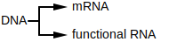
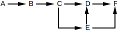
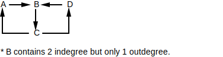

Question 1 four and beep or boop. The word red should be hidden.
Question 2 What are the colors?
- avocado = green
- blueberries = blue
- banana = yellow
- strawberry = red
Question 3 Which fruit has a red color?
Answer with true_IGNORE or false_IGNORE:
- avocado = false1
- blueberries = false2
- banana = false3
- strawberry = true0
Question 4 What color is the item? 4 possibilities but only 1 will be shown.
- cherry
- strawberry
- stop sign
- lipstick
A substring of length k within some larger biological sequence (e.g. DNA or amino acid chain). For example, in the DNA sequence GAAATC, the following k-mer's exist:
| k | k-mers |
|---|---|
| 1 | G A A A T C |
| 2 | GA AA AA AT TC |
| 3 | GAA AAA AAT ATC |
| 4 | GAAA AAAT AATC |
| 5 | GAAAT AAATC |
| 6 | GAAATC |
A substring of length 2k + d within some larger biological sequence (e.g. DNA or amino acid chain) where the first k elements and the last k elements are known but the d elements in between isn't known.
When identifying a kd-mer with a specific k and d, the proper syntax is (k, d)-mer. For example, (1, 2)-mer represents a kd-mer with k=1 and d=2. In the DNA sequence GAAATC, the following (1, 2)-mer's exist: G--A, A--T, A--C.
5' (5 prime) and 3' (3 prime) describe the opposite ends of DNA. The chemical structure at each end is what defines if it's 5' or 3' -- each end is guaranteed to be different from the other. The forward direction on DNA is defined as 5' to 3', while the backwards direction is 3' to 5'.
Two complementing DNA strands will always be attached in opposite directions.

An enzyme that replicates a strand of DNA. That is, DNA polymerase walks over a single strand of DNA bases (not the strand of base pairs) and generates a strand of complements. Before DNA polymerase can attach itself and start replicating DNA, it requires a primer.
DNA polymerase is unidirectional, meaning that it can only walk a DNA strand in one direction: reverse (3' to 5')
The process of DNA replication requires that DNA's 2 complementing strands be unwound and split open. The area where the DNA starts to split is called the replication fork. In bacteria, the replication fork starts at the replication origin and keeps expanding until it reaches the replication terminus. Special enzymes called DNA polymerases walk over each unwound strand and create complementing strands.

The point in DNA at which replication starts. May be shortened to ori.
The point in DNA at which replication ends. May be shortened to ter.
Bacteria are known to have a single chromosome of circular / looping DNA. In this DNA, the replication origin (ori) is the region of DNA where replication starts, while the replication terminus (ter) is where replication ends.

If you split up the DNA based on ori and ter being cutting points, you end up with 4 distinct strands. Given that the direction of a strand is 5' to 3', if the direction of the strand starts at...
-
ori and ends at ter, it's called the forward half-strand.

-
ter and ends at ori, it's called the reverse half-strand.

Given the 2 strands tha make up a DNA molecule, the strand that goes in the...
- forward half-strand (5' to 3') is called the lagging half-strand.
- reverse half-strand (3' to 5') is called the leading half-strand.
This nomenclature has to do with DNA polymerase. Since DNA polymerase can only walk in the reverse direction (3' to 5'), it synthesizes the leading half-strand in one shot. For the lagging half-strand (5' to 3'), multiple DNA polymerases have to used to synthesize DNA, each binding to the lagging strand and walking backwards a small amount to generate a small fragment of DNA (Okazaki fragment). the process is much slower for the lagging half-strand, that's why it's called lagging.
A small fragment of DNA generated by DNA polymerase for forward half-strands. DNA synthesis for the forward half-strands can only happen in small pieces. As the fork open ups every ~2000 nucleotides, DNA polymerase attaches to the end of the fork on the forward half-strand and walks in reverse to generate that small segment (DNA polymerase can only walk in the reverse direction).
An enzyme that sews together short segments of DNA called Okazaki fragments by binding the phosphate group on the end of one strand with the deoxyribose group on the other strand.
A sequence in the ori that the DnaA protein (responsible for DNA replication) binds to.
Two strands of DNA bound together, where each strand is the reverse complement of the other.

A segment of DNA that contains the instructions for either a protein or functional RNA.
The final synthesized material resulting from the instructions that make up a gene. That synthesized material either being a protein or functional RNA.
The process of copying a gene to mRNA. Specifically, the enzyme RNA polymerase copies the segment of DNA that makes up that gene to a strand of RNA.

The process of turning mRNA to protein. Specifically, a ribosome takes in the mRNA generated by transcription and outputs the protein that it codes for.

The process by which a gene is synthesized into a gene product. When the gene product is...
- a protein, the gene is transcribed to mRNA and translated to a protein.
- functional RNA, the gene is transcribed to a type of RNA that isn't mRNA (only mRNA is translated to a protein).

The proteins encoded by these genes effect gene expression for certain other genes. That is, a regulatory protein can cause certain other genes to be expressed more (promote gene expression) or less (repress gene expression).
Regulatory genes are often controlled by external factors (e.g. sunlight, nutrients, temperature, etc..)
A feedback loop is a system where the output (or some part of the output) is fed back into the system to either promote or repress further outputs.

A positive feedback loop amplifies the output while a negative feedback loop regulates the output. Negative feedback loops in particular are important in biology because they allow organisms to maintain homeostasis / equilibrium (keep a consistent internal state). For example, the system that regulates core temperatures in a human is a negative feedback loop. If a human's core temperature gets too...
- low, they shiver to drive the temperature up.
- high, they sweat to drive the temperature down.
In the example above, the output is the core temperature. The body monitors its core temperature and employs mechanisms to bring it back to normal if it goes out of range (e.g. sweat, shiver). The outside temperature is influencing the body's core temperature as well as the internal shivering / sweating mechanisms the body employs.

A biological clock that synchronizes roughly around the earth's day-night cycle. This internal clock helps many species regulate their physical and behavioural attributes. For example, hunt during the night vs sleep during the day (e.g. nocturnal owls).
The area just before some interval of DNA. Since the direction of DNA is 5' to 3', this area is towards the 5' end (upper end).
The area just after some interval of DNA. Since the direction of DNA is 5' to 3', this area is towards the 3' end (lower end).
A regulatory protein that controls the rate of transcription for some gene that it has influence over (the copying of DNA to mRNA). The protein binds to a specific sequence in the gene's upstream region.
A pattern that matches against many different k-mers, where those matched k-mers have some shared biological significance. The pattern matches a fixed k where each position may have alternate forms. The simplest way to think of a motif is a regex pattern without quantifiers. For example, the regex [AT]TT[GC]C may match to ATTGC, ATTCC, TTTGC, and TTTCC.
A specific nucleotide sequence that matches a motif. For example, given a motif represented by the regex [AT]TT[GC]C, the sequences ATTGC, ATTCC, TTTGC, and TTTCC would be its motif members.
A set of k-mers stacked on top of each other in a matrix, where the k-mers are either...
- motif members of the same motif,
- or suspected motif members of the same motif.
For example, the motif [AT]TT[GC]C has the following matrix:
| 0 | 1 | 2 | 3 | 4 |
|---|---|---|---|---|
| A | T | T | G | C |
| A | T | T | C | C |
| T | T | T | G | C |
| T | T | T | C | C |
The motif of a transcription factor, typically 8 to 12 nucleotides in length.
The physical binding site for a transcription factor. A gene that's regulated by a transcription factor needs a sequence located in its upstream region that the transcription factor can bind to: a motif member of that transcription factor's regulatory motif.
⚠️NOTE️️️⚠️
A gene's upstream region is the 600 to 1000 nucleotides preceding the start of the gene.
A single strand of DNA generated from mRNA. The enzyme reverse transcriptase scans over the mRNA and creates the complementing single DNA strand.

The mRNA portion breaks off, leaving the single-stranded DNA.

A device used to compare gene expression. This works by measuring 2 mRNA samples against each other: a control sample and an experimental sample. The samples could be from...
- the same organism but at different times.
- diseased and healthy versions of the same organism.
- etc..
Both mRNA samples are converted to cDNA and are given fluorescent dyes. The control sample gets dyed green while the experimental sample gets dyed red.

A sheet is broken up into multiple regions, where each region has the cDNA for one specific gene from the control sample printed.
The idea is that once the experimental cDNA is introduced to that region, it should bind to the control cDNA that's been printed to form double-stranded DNA. The color emitted in a region should correspond to the amount of gene expression for the gene that region represents. For example, if a region on the sheet is fully yellow, it means that the gene expression for that gene is roughly equal (red mixed with green is yellow).
An algorithm that tries to speed things up by taking the locally optimal choice at each step. That is, the algorithm doesn't look more than 1 step ahead.
For example, imagine a chess playing AI that had a strategy of trying to eliminate the other player's most valuable piece at each turn. It would be considered greedy because it only looks 1 move ahead before taking action. Normal chess AIs / players look many moves ahead before taking action. As such, the greedy AI may be fast but it would very likely lose most matches.
When a probability is based off past events, 0.0 and 1.0 shouldn't be used. That is, if you've...
- never seen an even occur in the past, it doesn't mean that there's a 0.0 probability of it occurring next.
- always seen an event occur in the past, it doesn't mean that there's a 1.0 probability of it occurring next.
Unless you're dealing with hard logical statements where prior occurrences don't come in to play (e.g. 1+1=2), you should include a small chance that some extremely unlikely event may happen. The example tossed around is "the probability that the sun will not rise tomorrow." Prior recorded observations show that sun has always risen, but that doesn't mean that there's a 1.0 probability of the sun rising tomorrow (e.g. some extremely unlikely cataclysmic event may prevent the sun from rising).
If some independent true/false event occurs n times, and s of those n times were successes, it's natural for people to assume the probability of success is . However, if the number of successes is 0, the probability would be 0.0. Cromwell's rule states that when a probability is based off past events, 0.0 and 1.0 shouldn't be used. As such, a more appropriate / meaningful measure of probability is .
For example, imagine you're sitting on a park bench having lunch. Of the 8 birds you've seen since starting your lunch, all have been pigeons. If you were to calculate the probability that the next bird you'll see a crow, would be flawed because it states that there's no chance that the next bird will be a crow (there obviously is a chance, but it may be a small chance). Instead, applying Laplace's rule allows for the small probability that a crow may be seen next: .
Laplace's rule of succession is more meaningful when the number of trials (n) is small.
When a zero is replaced with a small number to prevent unfair scoring. See Laplace's rule of succession.
A randomized algorithm that delivers a guaranteed exact solution. That is, even though the algorithm makes random decisions it is guaranteed to converge on the exact solution to the problem its trying to solve (not an approximate solution).
An example of a Las Vegas algorithm is randomized quicksort (randomness is applied when choosing the pivot).
A randomized algorithm that delivers an approximate solution. Because these algorithms are quick, they're typically run many times. The approximation considered the best out of all runs is the one that gets chosen as the solution.
An example of a Monte Carlo algorithm is a genetic algorithm to optimize the weights of a deep neural network. That is, a step of the optimization requires running n different neural networks to see which gives the best result, then replacing those n networks with n copies of the best performing network where each copy has randomly tweaked weights. At some point the algorithm will stop producing incrementally better results.
Perform the optimization (the entire thing, not just a single step) thousands of times and pick the best network.
The k-mer generated by selecting the most abundant column at each index of a motif matrix.
| 0 | 1 | 2 | 3 | 4 | |
|---|---|---|---|---|---|
| k-mer 1 | A | T | T | G | C |
| k-mer 2 | A | T | T | C | C |
| k-mer 3 | T | T | T | G | C |
| k-mer 4 | T | T | T | C | C |
| k-mer 5 | A | T | T | C | G |
| consensus | A | T | T | C | C |
The generated k-mer may also use a hybrid alphabet. The consensus string for the same matrix above using IUPAC nucleotide codes: WTTSS.
The uncertainty associated with a random variable. Given some set of outcomes for a variable, it's calculated as .
This definition is for information theory. In other contexts (e.g. physics, economics), this term has a different meaning.
All of the DNA for some organism.
The ordered elements that make up some biological entity. For example, a ...
- DNA sequence contains the set of nucleotides and their positions for that DNA strand.
- peptide sequence contains the set of amino acids and their positions for that peptide.
The process of determining which nucleotides are assigned to which positions in a strand of DNA or RNA.
The machinery used for DNA sequencing is called a sequencer. A sequencer takes multiple copies of the same DNA, breaks that DNA up into smaller fragments, and scans in those fragments. Each fragment is typically the same length but has a unique starting offset. Because the starting offsets are all different, the original larger DNA sequence can be guessed at by finding fragment with overlapping regions and stitching them together.
| 0 | 1 | 2 | 3 | 4 | 5 | 6 | 7 | 8 | 9 | |
|---|---|---|---|---|---|---|---|---|---|---|
| read 1 | C | T | T | C | T | T | ||||
| read 2 | G | C | T | T | C | T | ||||
| read 3 | T | G | C | T | T | C | ||||
| read 4 | T | T | G | C | T | T | ||||
| read 5 | A | T | T | G | C | T | ||||
| reconstructed | A | T | T | G | C | T | T | C | T | T |
A machine that performs DNA or RNA sequencing.
An error caused by a sequencer returning a fragment where a nucleotide was misinterpreted at one or more positions (e.g. offset 3 was actually a C but it got scanned in as a G).
⚠️NOTE️️️⚠️
This term may also be used in reference to homopolymer errors, known to happen with nanopore technology. From here...
A homopolymer is when you have stretches of the same nucleotide, and the error is miscounting the number of them. e.g: GAAAC could be called as "GAAC" or "GAAAAC" or even "GAAAAAAAC".
A segment of genome scanned in during the process of sequencing.
A segment of genome scanning in during the process of sequencing, where the middle of the segment is unknown. That is, the first k elements and the last k elements are known, but the d elements in between aren't known. The total size of the segment is 2k + d.
Sequencers provide read-pairs as an alternative to longer reads because the longer a read is the more errors it contains.
See kd-mer.
A scanned sequence returned by a sequencer. Represented as either a read or a read-pair.
The process of stitching together overlapping fragments to guess the sequence of the original larger DNA sequence that those fragments came from.
When representing a sequence that isn't fully conserved, it may be more appropriate to use an alphabet where each letter can represent more than 1 nucleotide. For example, the IUPAC nucleotide codes provides the following alphabet:
- A = A
- C = C
- T = T
- G = G
- W = A or T
- S = G or C
- K = G or T
- Y = C or T
- ...
If the sequence being represented can be either AAAC or AATT, it may be easier to represent a single string of AAWY.
A hybrid alphabet with the following mapping:
| Letter | Base |
|---|---|
| A | Adenine |
| C | Cytosine |
| G | Guanine |
| T (or U) | Thymine (or Uracil) |
| R | A or G |
| Y | C or T |
| S | G or C |
| W | A or T |
| K | G or T |
| M | A or C |
| B | C or G or T |
| D | A or G or T |
| H | A or C or T |
| V | A or C or G |
| N | any base |
| . or - | gap |
A graphical representation of how conserved a sequence's positions are. Each position has its possible nucleotides stacked on top of each other, where the height of each nucleotide is based on how conserved it is. The more conserved a position is, the taller that column will be.
Typically applied to DNA or RNA, and May also be applied to other biological sequence types (e.g. amino acids).
The following is an example of a logo generated from a motif sequence:

A DNA sequence that can change its position within a genome, altering the genome size. They come in two flavours:
- Class I (retrotransposon) - Behaves similarly to copy-and-paste where the sequence is duplicated. DNA is transcribed to RNA, followed by that RNA being reverse transcribed back to DNA by an enzyme called reverse transcriptase.
- Class II (DNA transposon) - Behaves similarly to cut-and-paste where the sequence is moved. DNA is physically cut out by an enzyme called transposases and placed back in at some other location.
Often times, transposons cause disease. For example, ...
- insertion of a transposon into a gene will likely disable that gene.
- after a transposon leaves a gene, the gap likely won't be repaired correctly.
An internal representation of a graph where each node has a list of pointers to other nodes that it can forward to.

The graph above represented as an adjacency list would be...
| From | To |
|---|---|
| A | B |
| B | C |
| C | D,E |
| D | F |
| E | D,F |
| F |
An internal representation of a graph where a matrix defines the number of times that each node forwards to every other node.
The graph above represented as an adjacency matrix would be...
| A | B | C | D | E | F | |
|---|---|---|---|---|---|---|
| A | 0 | 1 | 0 | 0 | 0 | 0 |
| B | 0 | 0 | 1 | 0 | 0 | 0 |
| C | 0 | 0 | 0 | 1 | 1 | 0 |
| D | 0 | 0 | 0 | 0 | 0 | 1 |
| E | 0 | 0 | 0 | 1 | 0 | 1 |
| F | 0 | 0 | 0 | 0 | 0 | 0 |
A path in a graph that visits every node exactly once.
The graph below has the Hamiltonian path ABCEDF.
A path in a graph that visits every edge exactly once.
In the graph below, the Eulerian path is (A,B), (B,C), (C,D), (D,E), (E,C), (C,D), (D,F).

An Eulerian path that forms a cycle. That is, a path in a graph that is a cycle and visits every edge exactly once.
The graph below has an Eulerian cycle of (A,B), (B,C) (C,D), (D,F), (F,C), (C,A).

If a graph contains an Eulerian cycle, it's said to be an Eulerian graph.
For a graph to be a Eulerian graph, it must have an Eulerian cycle: a path in a graph that is a cycle and visits every edge exactly once. For a graph to have an Eulerian cycle, it must be both balanced and strongly connected.

Note how in the graph above, ...
-
every node is reachable from every other node (strongly connected),
-
every node has an outdegree equal to its indegree (balanced).
Node Indegree Outdegree A 1 1 B 1 1 C 2 2 D 1 1 F 1 1
In contrast, the following graphs are not Eulerian graphs (no Eulerian cycles exist):
-
Strongly connected but not balanced.

-
Balanced but not strongly connected.

-
Balanced but disconnected (not strongly connected).

A graph is disconnected if you can break it out into 2 or more distinct sub-graphs without breaking any paths. In other words, the graph contains at least two nodes which aren't contained in any path.
The graph below is disconnected because there is no path that contains E, F, G, or H and A, B, C, or D.

The graph below is connected.

- A graph is strongly connected if every node is reachable from every other node.
The graph below is not strongly connected because neither A nor B is reachable by C, D, E, or F.
The graph below is strongly connected because all nodes are reachable from all nodes.
The number of edges leading into / out of a node of a directed graph.
The node below has an indegree of 3 and an outdegree of 1.

A node of a directed graph that has an equal indegree and outdegree. That is, the number of edges coming in is equal to the number of edges going out.
The node below has an indegree and outdegree of 1. It is a balanced node.

A directed graph where ever node is balanced.
The graph below is balanced graph because each node has an equal indegree and outdegree.
| Node | Indegree | Outdegree |
|---|---|---|
| A | 1 | 1 |
| B | 1 | 1 |
| C | 2 | 2 |
| D | 1 | 1 |
| F | 1 | 1 |
A graph representing the k-mers making up a string. Specifically, the graph is built in 2 steps:
-
Each node is a fragment.

-
Each edge is between overlapping fragments (nodes), where the ...
- source node has the overlap in its suffix .
- destination node has the overlap in its prefix.

Overlap graphs used for genome assembly.
A special graph representing the k-mers making up a string. Specifically, the graph is built in 2 steps:
-
Each k-mer is represented as an edge connecting 2 nodes. The ...
- source node represents the first 0 to n-1 elements of the k-mer,
- destination node represents last 1 to n elements of the k-mer,
- and edge represents the k-mer.
For example, ...

-
Each node representing the same value is merged together to form the graph.
For example, ...

De Bruijn graphs are used for genome assembly. It's much faster to assemble a genome from a de Bruijn graph than it is to from an overlap graphs.
De Bruijn graphs were originally invented to solve the k-universal string problem.
For some alphabet and k, a string is considered k-universal if it contains every k-mer for that alphabet exactly once. For example, for an alphabet containing only 0 and 1 (binary) and k=3, a 3-universal string would be 0001110100 because it contains every 3-mer exactly once:
- 000: 0001110100
- 001: 0001110100
- 010: 0001110100
- 011: 0001110100
- 100: 0001110100
- 101: 0001110100
- 110: 0001110100
- 111: 0001110100
⚠️NOTE️️️⚠️
This is effectively assembly. There are a set of k-mers and they're being stitched together to form a larger string. The only difference is that the elements aren't nucleotides.
De Bruijn graphs were invented in an effort to construct k-universal strings for arbitrary values of k. For example, given the k-mers in the example above (000, 001, ...), a k-universal string can be found by constructing a de Bruijn graph from the k-mers and finding a Eulerian cycle in that graph.

There are multiple Eulerian cycles in the graph, meaning that there are multiple 3-universal strings:
- 0001110100
- 0011101000
- 1110001011
- 1100010111
- ...
For larger values of k (e.g. 20), finding k-universal strings would be too computationally intensive without De Bruijn graphs and Eulerian cycles.
Given a substring from some larger sequence that was reconstructed from a set of fragments, the coverage of that substring is the number of reads used to construct it. The substring length is typically 1: the coverage for each position of the sequence.

The concept of taking multiple reads and breaking them up into smaller reads.

When read breaking, smaller k-mers result in better coverage but also make the de Bruijn graph more tangled. The more tangled the de Bruijn graph is, the harder it is to infer the full sequence.
In the example above, the average coverage...
- for the left-hand side (original) is 2.1.
- for the right-hand side (broken) is 4.
See also: read-pair breaking.
⚠️NOTE️️️⚠️
What purpose does this actually serve? Mimicking 1 long read as n shorter reads isn't equivalent to actually having sequenced those n shorter reads. For example, what if the longer read being broken up has an error? That error replicates when breaking into n shorter reads, which gives a false sense of having good coverage and makes it seems as if it wasn't an error.
The concept of taking multiple read-pairs and breaking them up into read-pairs with a smaller k.

When read-pair breaking, a smaller k results in better coverage but also make the de Bruijn graph more tangled. The more tangled the de Bruijn graph is, the harder it is to infer the full sequence.
In the example above, the average coverage...
- for the left-hand side (original) is 1.6.
- for the right-hand side (broken) is 2.5.
See also: read breaking.
⚠️NOTE️️️⚠️
What purpose does this actually serve? Mimicking 1 long read-pair as n shorter read-pairs isn't equivalent to actually having sequenced those n shorter read-pairs. For example, what if the longer read-pair being broken up has an error? That error replicates when breaking into n shorter read-pairs, which gives a false sense of having good coverage and makes it seems as if it wasn't an error.
An unambiguous stretch of DNA derived by searching an overlap graph / de Bruijn graph for paths that are the longest possible stretches of non-branching nodes (indegree and outdegree of 1). Each stretch will be a path that's either ...
-
a line: each node has an indegree and outdegree of 1.
-
a cycle: each node has an indegree and outdegree of 1 and it loops.

-
a line sandwiched between branching nodes: nodes in between have an indegree and outdegree of 1 but either...
- starts at a node where indegree != 1 but outdegree == 1 (incoming branch),
- or ends at a node where indegree == 1 but outdegree != 1 (outgoing branch),
- or both.

Real-world complications with DNA sequencing make de Bruijn / overlap graphs too tangled to guess a full genome: both strands of double-stranded DNA are sequenced and mixed into the graph, sequencing errors make into the graph, repeats regions of the genome can't be reliably handled by the graph, poor coverage, etc.. As such, biologists / bioinformaticians have no choice but to settle on contigs.

Elements that make up RNA, similar to how nucleotides are the elements that make up DNA.
- A = Adenine (same as nucleotide)
- C = Cytosine (same as nucleotide)
- G = Guanine (same as nucleotide)
- U = Uracil (replace nucleotide Thymine)
A substance (typically an enzyme) for killing, preventing, or inhibiting the grow of bacterial infections.
The building blocks of peptides / proteins, similar to how nucleotides are the building blocks of DNA.
⚠️NOTE️️️⚠️
Answer shouldn't be plural.
Amino acids that are used during translation. These are the 20 amino acids that the ribosome translates from codons. In contrast, there are many other non-proteinogenic amino acids that are used for non-ribosomal peptides.
The term "proteinogenic" means "protein creating".
| 1 Letter Code | 3 Letter Code | Amino Acid | Mass (daltons) |
|---|---|---|---|
| A | Ala | Alanine | 71.04 |
| C | Cys | Cysteine | 103.01 |
| D | Asp | Aspartic acid | 115.03 |
| E | Glu | Glutamic acid | 129.04 |
| F | Phe | Phenylalanine | 147.07 |
| G | Gly | Glycine | 57.02 |
| H | His | Histidine | 137.06 |
| I | Ile | Isoleucine | 113.08 |
| K | Lys | Lysine | 128.09 |
| L | Leu | Leucine | 113.08 |
| M | Met | Methionine | 131.04 |
| N | Asn | Asparagine | 114.04 |
| P | Pro | Proline | 97.05 |
| Q | Gln | Glutamine | 128.06 |
| R | Arg | Arginine | 156.1 |
| S | Ser | Serine | 87.03 |
| T | Thr | Threonine | 101.05 |
| V | Val | Valine | 99.07 |
| W | Trp | Tryptophan | 186.08 |
| Y | Tyr | Tyrosine | 163.06 |
⚠️NOTE️️️⚠️
The masses are monoisotopic masses.
A short amino acid chain of at least size two. Peptides are considered miniature proteins, but when something should be called a peptide vs a protein is loosely defined: the cut-off is anywhere between 50 to 100 amino acids.
A peptide of at least size 10.
The part of an amino acid that makes it unique from all others.
When two or more amino acids combine to make a peptide/protein, specific elements are removed from each amino acid. What remains of each amino acid is the amino acid residue.
A peptide that doesn't have a start / end. It loops.

A peptide that has a start and an end. It doesn't loop.

A peptide derived taking some contiguous piece of a larger peptide.
A subpeptide can have a length == 1 where a peptide must have a length > 1. As such, in the case where the subpeptide has a length ...
- == 1, it isn't considered a peptide.
- > 1, it is considered a peptide.
The overall concept of transcription and translation: Instructions for making a protein are copied from DNA to RNA, then RNA feeds into the ribosome to make that protein (DNA → RNA → Protein).
Most, not all, peptides are synthesized as described above. Non-ribosomal peptides are synthesized outside of the transcription and translation.
A peptide that was synthesized by a protein called NRP synthetase rather than synthesized by a ribosome. NRP synthetase builds peptides one amino acid at a time without relying on transcription or translation.
Non-ribosomal peptides may be cyclic. Common use-cases for non-ribosomal peptides:
- antibiotics
- anti-tumor agents
- immunosuppressors
- communication between bacteria (quorum sensing)
A protein responsible for the production of a non-ribosomal peptide.
A segment of an NRP synthetase protein responsible for the outputting a single amino acid. For example, the NRP synthetase responsible for producing Tyrocidine has 10 adenylation domains, each of which is responsible for outputting a single amino acid of Tyrocidine.
May also be shortened to A-domain.
A device that randomly shatters molecules into pieces and measures the mass-to-charge of those pieces. The output of the device is a plot called a spectrum.
Note that mass spectrometers have various real-world practical problems. Specifically, they ...
- may not capture all possible pieces from the intended molecules (missing mass-to-charge ratios).
- may capture pieces from unintended molecules (faulty mass-to-charge ratios).
- will likely introduce noise into the pieces they capture.
The output of a mass spectrometer. The...
- x-axis is the mass-to-charge ratio.
- y-axis is the intensity of that mass-to-charge ratio (how much more / less did that mass-to-charge appear compared to the others).

Note that mass spectrometers have various real-world practical problems. Specifically, they ...
- may not capture all possible pieces from the intended molecules (missing mass-to-charge ratios).
- may capture pieces from unintended molecules (faulty mass-to-charge ratios).
- will likely introduce noise into the pieces they capture.
As such, these plots aren't exact.
In a mass spectrometer output, the...
- x-axis is the mass-to-charge ratio.
- y-axis is the intensity.

List of potential fragment masses derived from a spectrum. That is, the molecules fed into the mass spectrometer were randomly fragmented and each fragment had its mass-to-charge ratio measured. From there, each mass-to-charge ratio was converted a set of potential masses.
The masses in an experimental spectrum ...
- may not capture all possible fragments for the intended molecule (missing masses).
- may capture fragments from unintended molecules (faulty masses).
- will likely contain noise.
In the context of peptides, the mass spectrometer is expected to fragment based on the bonds holding the individual amino acids together. For example, given the linear peptide NQY, the experimental spectrum may include the masses for [N, Q, ?, ?, QY, ?, NQY] (? indicate faulty masses, Y and NQ missing).
List of all of possible fragment masses for a molecule in addition to 0 and the mass of the entire molecule. This is what the experimental spectrum would be in a perfect world: no missing masses, no faulty masses, no noise, only a single possible mass for each mass-to-charge ratio.
In the context of peptides, the mass spectrometer is expected to fragment based on the bonds holding the individual amino acids together. For example, given the linear peptide NQY, the theoretical spectrum will include the masses for [0, N, Q, Y, NQ, QY, NQY]. It shouldn't include masses for partial amino acids. For example, it shouldn't include NQY breaking into 2 pieces by splitting Q, such that one half has N and part of Q, and the other has the remaining part of Q with Y.
An operation used to derive amino acid masses that probably come from the peptide used to generate that experimental spectrum. That is, it generates a list of amino acid masses that could have been for the peptide that generated the experimental spectrum.
The operation derives amino acid masses by subtracting experimental spectrum masses from each other. For example, the following experimental spectrum is for the linear peptide NQY: [113.9, 115.1, 136.2, 162.9, 242.0, 311.1, 346.0, 405.2]. Performing 242.0 - 113.9 results in 128.1, which is very close to the mass for amino acid Y.
Note how the mass for Y was derived from the masses in experimental spectrum even though it's missing from the experimental spectrum itself:
- Mass of N is 114. 2 masses are close to 114 in the experimental spectrum: [113.9, 115.1].
- Mass of Q is 163. 1 mass is close to 163 in the experimental spectrum: [162.9].
- Mass of Y is 128. 0 masses are close to 128 in the experimental spectrum: [].
A unit of measurement used in physics and chemistry. 1 Dalton is approximately the mass of a single proton / neutron, derived by taking the mass of a carbon-12 atom and dividing it by 12.
A sequence of 3 ribonucleotides that maps to an amino acid or a stop marker. During translation, the ribosome translates the RNA to a protein 3 ribonucleotides at a time:
⚠️NOTE️️️⚠️
The stop marker tells the ribosome to stop translating / the protein is complete.
⚠️NOTE️️️⚠️
The codons are listed as ribonucleotides (RNA). For nucleotides (DNA), swap U with T.
| 1 Letter Code | 3 Letter Code | Amino Acid | Codons |
|---|---|---|---|
| A | Ala | Alanine | GCA, GCC, GCG, GCU |
| C | Cys | Cysteine | UGC, UGU |
| D | Asp | Aspartic acid | GAC, GAU |
| E | Glu | Glutamic acid | GAA, GAG |
| F | Phe | Phenylalanine | UUC, UUU |
| G | Gly | Glycine | GGA, GGC, GGG, GGU |
| H | His | Histidine | CAC, CAU |
| I | Ile | Isoleucine | AUA, AUC, AUU |
| K | Lys | Lysine | AAA, AAG |
| L | Leu | Leucine | CUA, CUC, CUG, CUU, UUA, UUG |
| M | Met | Methionine | AUG |
| N | Asn | Asparagine | AAC, AAU |
| P | Pro | Proline | CCA, CCC, CCG, CCU |
| Q | Gln | Glutamine | CAA, CAG |
| R | Arg | Arginine | AGA, AGG, CGA, CGC, CGG, CGU |
| S | Ser | Serine | AGC, AGU, UCA, UCC, UCG, UCU |
| T | Thr | Threonine | ACA, ACC, ACG, ACU |
| V | Val | Valine | GUA, GUC, GUG, GUU |
| W | Trp | Tryptophan | UGG |
| Y | Tyr | Tyrosine | UAC, UAU |
| * | * | STOP | UAA, UAG, UGA |
The different ways of dividing a DNA string into codons. Specifically, there are 6 different ways that a DNA string can be divided into codons:
- You can start dividing at index 0, 1, or 2.
- You can divide either the DNA string itself or the reverse complementing DNA string.
For example, given the string ATGTTCCATTAA, the following codon division are possible:
| DNA | Start Index | Discard Prefix | Codons | Discard Suffix |
|---|---|---|---|---|
| ATGTTCCATTAA | 0 | ATG, TTC, CAT, TAA | ||
| ATGTTCCATTAA | 1 | A | TGT, TCC, ATT | AA |
| ATGTTCCATTAA | 2 | AT | GTT, CCA, TTA | A |
| TTAATGGAACAT | 0 | TTA, ATG, GAA, CAT | ||
| TTAATGGAACAT | 1 | T | TAA, TGG, AAC | AT |
| TTAATGGAACAT | 2 | TT | AAT, GGA, ACA | T |
⚠️NOTE️️️⚠️
TTAATGGAACAT is the reverse complement of ATGTTCCATTAA.
When a DNA string or its reverse complement is made up of the codons required for an amino acid sequence. For example, ACAGTA encodes for the amino acid sequence...
- Threonine-Valine
- Tyrosine-Cysteine (derived from reverse complement)
A bruteforce algorithm that enumerates candidates to explore at each step but also discards untenable candidates using various checks. The enumeration of candidates is the branching step, while the culling of untenable candidates is the bounding step.
A sequence derived by traversing some other sequence in order and choosing which elements to keep vs delete. For example, can is a subsequence of cation.

Not to be confused with substring. A substring may also be a subsequence, but a subsequence won't necessarily be a substring.
A sequence derived by taking a contiguous part of some other sequence (order of elements maintained). For example, cat is a substring of cation.

Not to be confused with subsequence. A substring may also be a subsequence, but a subsequence won't necessarily be a substring.
- Subsequence: A sequence derived by traversing some other sequence in order and choosing which elements to keep vs delete.
- String: A sequence derived by taking a contiguous part of some other sequence (order of elements maintained).
A 1-dimensional ordering of nodes in a directed acyclic graph in which each node is ahead of all of its predecessors / parents. In other words, the node is ahead of all other nodes that connect to it.
For example, the graph ...

... the topological order is either [A, B, C, D, E] or [A, B, C, E, D]. Both are correct.
A common subsequence between a set of strings of which is the longest out of all possible common subsequences. There may be more than one per set.
For example, AACCTTGG and ACACTGTGA share a longest common subsequence of...
-
ACCTGG...

-
AACTGG...

-
etc..
Given a set of sequences, a sequence alignment is a set of operations applied to each position in an effort to line up the sequences. These operations include:
- insert/delete (indel for short).
- replace (also referred to as mismatch).
- keep matching (also referred to as match).
For example, the sequences MAPLE and TABLE may be aligned by performing...
| String 1 | String 2 | Operation |
|---|---|---|
| M | Insert/delete | |
| T | Insert/delete | |
| A | A | Keep matching |
| P | B | Replace |
| L | L | Keep matching |
| E | E | Keep matching |
Or, MAPLE and TABLE may be aligned by performing...
| String 1 | String 2 | Operation |
|---|---|---|
| M | T | Replace |
| A | A | Keep matching |
| P | B | Replace |
| L | L | Keep matching |
| E | E | Keep matching |
The names of these operations make more sense if you were to think of alignment instead as transformation. The first example above in the context of transforming MAPLE to TABLE may be thought of as:
| From | To | Operation | Result |
|---|---|---|---|
| M | Delete M | ||
| T | Insert T | T | |
| A | A | Keep matching A | TA |
| P | B | Replace P to B | TAB |
| L | L | Keep matching L | TABL |
| E | E | Keep matching E | TABLE |
The shorthand form of representing sequence alignments is to stack each sequence. The example above may be written as...
| 0 | 1 | 2 | 3 | 4 | 5 | |
|---|---|---|---|---|---|---|
| String 1 | M | A | P | L | E | |
| String 2 | T | A | B | L | E |
Typically, all possible sequence alignments are represented using an alignment graph. For example, the graph showing all the different ways that MAPLE and TABLE may be aligned ...

A path in this graph from source (top-left) to sink (bottom-right) is called an alignment path. An alignment path represents a sequence alignment. Often times the best sequence alignment is either the one that has the ...
- smallest number of operations.
- set of operations with the least cost (e.g. some replacements can be considered more costly than an indel).
A directed graph representing all possible sequence alignments for some set of sequences. For example, the graph showing all the different ways that MAPLE and TABLE may be aligned ...
A path in this graph from source (top-left) to sink (bottom-right) represents an alignment.
A path in an alignment graph that represents one possible sequence alignment. For example, given the following alignment path ...
is represent as the alignment...
| 0 | 1 | 2 | 3 | 4 | 5 | 6 | 7 | |
|---|---|---|---|---|---|---|---|---|
| String 1 | - | - | M | A | P | - | L | E |
| String 2 | T | A | - | B | L | E | - | - |
In the context of sequence alignment, indel is short-hand for insert/delete. For example, the following sequence alignment has 2 indels in the very beginning...
| Left | Right | Operation |
|---|---|---|
| M | Indel | |
| T | Indel | |
| A | A | Keep matching |
| P | B | Replace |
| L | L | Keep matching |
| E | E | Keep matching |
The term insert/delete makes sense if you were to think of the set of operations as a transformation rather than an alignment. For example, the example above in the context of transforming MAPLE to TABLE:
| From | To | Operation | Result |
|---|---|---|---|
| M | Delete M | ||
| T | Insert T | T | |
| A | A | Keep matching A | TA |
| P | B | Replace P to B | TAB |
| L | L | Keep matching L | TABL |
| E | E | Keep matching E | TABLE |
A gene that has the potential to cause cancer. In tumor cells, these genes are often mutated or expressed at higher levels.
Most normal cells will undergo apoptosis when critical functions are altered and malfunctioning. Activated oncogenes may cause those cells to survive and proliferate instead.
Given two strings, the hamming distance is the number of positional mismatches between them. For example, the hamming distance between TABLE and MAPLE is 2.
An algorithm that solves a problem by recursively breaking it down into simpler smaller sub-problems, where recurrence computations are performed and stored in some lookup table such that they can be re-used rather than having to perform the computation multiple times (essentially trading space for faster results). The lookup table may be created before hand or as a cache that gets filled as the algorithm runs.
For example, imagine a money system where coins are represented in 1, 12, and 13 cent denominations. You can use dynamic programming to find the minimum number of coins to represent some monetary value such as $0.17: min_coins(0.17) = min(min_coins(0.17 - 0.01) + 1, min_coins(0.17 - 0.12) + 1, min_coins(0.17 - 0.13) + 1).

The recursive graph above shows how $0.17 can be produced from a minimum of 5 coins: 1 x 13 cent denomination and 4 x 1 cent denomination. However, it recomputes identical parts of the graph multiple times. For example, the branch 3--2--1 is independently computed 5 times. With dynamic program, that branch would only be computed once. The result of that computation would be re-used each time it was encountered.